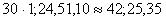
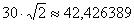

EL TEOREMA DE PITÀGORES A L'ANTIGUITAT
|
BLOC 2. ESPAI I
FORMA
El Teorema de
Pitàgores a l’antiguitat
El Teorema de
Pitàgores a Babilònia
A l’antiga Babilònia els
escribes s’ocupaven d’escriure i ensenyar els coneixements matemàtics.
Escrivien en taules de fang tou, fent incissions en forma de cunya (anomenada
escriptura cuneïforme): utilitzaven falques verticals per escriure els nombres
de l’1 al 9, i horitzonatals per escriure les desenes.
Una tauleta matemàtica molt
important és l’anomenada tauleta YALE o
YBC 7289, ja que està relacionada amb el Teorema de Pitàgores.
Com que els babilònics
utilitzaven un sistema de numeració basat en les potències de 60, els nombres
que figuren a la tauleta es poden traduir al nostre sistema decimal:
Aplicant
el Teorema de Pitàgores es comprova quue la diagonal del quadrat s’obté com:
 o el que és el mateix:

El Teorema de
Pitàgores a Egipte
Els egipcis utilitzaven un triangle rectangle de costats
3, 4 i 5 (o proporcionals) per fer mesures de la terra per tal de recuperar les
fronteres dels terrenys que es perdien quan el riu Nil creixia.
Aquest triangle es coneix com Triangle egipci o Triangle
d’Isis.
El Teorema de
Pitàgores a
El tractat Jiu Zhang Suanshu (s. I) és considerat un llibre clàssic, i es
tradueix com Els procediments matemàtics
en Nou Capítols. En aquests nou capítols tracta diferents problemes
quotidians aplicant diferents eines matemàtiques, com el càlcul de les àrees de
terres cultivades, les regles de tres per l’intercanvi de cereals o diversos
càlculs per fer construccions. El capítol 9 tracta les diferents aplicacions
del “procediment del triangle rectangle” (Teorema de Pitàgores), i s’hi resolen
24 problemes.
Pots trobar més informació a: http://www.xtec.cat/sgfp/llicencies/200809/memories/1864/annex4.pdf
|